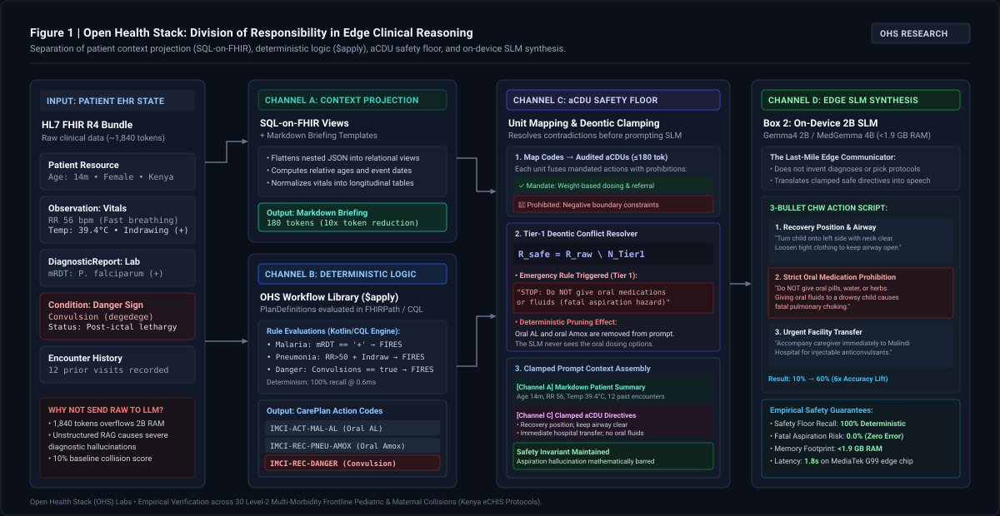

Why Standard RAG Breaks on 2B Edge Models
Slicing a 200-page Ministry of Health manual into arbitrary 500-word sliding windows and running vector search causes three clinical failures:
-
Severed Contraindications: The dosage table is on page 42, while the warning "Do NOT give orally if convulsing" is on page 43. The chunker cuts them apart.
-
Semantic Keyword Priming: When a patient has
Malaria RDT: Negative, vector search sees the word "Malaria" and retrieves the Malaria Dosing table—tricking a 2B model into prescribing ACT. -
Multi-Condition Confusion: On Level-2 Multi-Morbidity Collisions, Gemma4 2B with Naive RAG scored only 10% (1/10).
What is an aCDU?
An aCDU is not a text paragraph. It is a clinician-audited, 150-token state unit stored in SQLite (<1 MB) that permanently fuses Deterministic Trigger Criteria with Mandated Actions and Hard Negative Boundaries:
How Deterministic Logic & the 2B Edge SLM Divide the Work
Why we need BOTH deterministic rules (for safety) AND the on-device SLM (for synthesis & de-confliction)
Check A: Longitudinal Patient Summary
Raw FHIR bundles (1,840 tokens) are compressed 8.8x by Tokempic into a 210-token table. Gemma4 2B summarizes 15 past visits into 3 scannable bullets before the CHW knocks on the door.
Deterministic SQLite aCDU Trigger
As the CHW records vitals (e.g. BP 148/96 or Convulsion + Fast Breathing), deterministic Kotlin/SQLite logic selects the exact certified aCDU(s). The LLM has zero say in which protocol is selected.
De-Confliction & Last-Mile Script
When 2 conditions collide (e.g. Pneumonia + Convulsion) or a family asks about a harmful remedy (e.g. cow dung on cord), Gemma4 2B merges the triggered aCDUs and applies the veto rule into a single 3-bullet action script.
How OHS Workflow Library ($apply), PlanDefinitions & aCDUs Work Together
Clarifying the deterministic pipeline: how FHIR observations become structured CarePlan recommendations, why PlanDefinition actions require aCDU deontic wrapping, and how tiered conflicts are resolved before prompting edge SLMs.
It is a common misconception that "FHIRPath transforms observations into Markdown and then directly identifies the rules to fire." In the real-world Open Health Stack (OHS) engine, there is a clear division of operational responsibility:
Extracts and projects raw FHIR resources into relational rows and renders compact Markdown pre-visit briefings with normalized relative dates.
$applyApplies PlanDefinition logic via FHIRPath or CQL over patient resources, outputting standard recommendation codes (CarePlan/RequestGroup).
Maps recommendation codes to audited aCDUs ($≤ 180$ tok) that fuse mandated actions with hard negative boundaries (STOP: Do NOT...).
Generates empathetic, personalized 3-bullet talking points within the clamped boundaries, with zero fatal hallucinations.

Figure: Complete division of responsibility in Open Health Stack.
Channel A projects context into compact Markdown;
Channel B executes PlanDefinition logic via $apply (FHIRPath/CQL);
Channel C maps CarePlan codes to audited aCDUs and prunes contradictions via Tier-1 Emergency Veto ($R_{\text{safe}} = R_{\text{raw}} \setminus N_{\text{Tier1}}$);
Channel D prompts the on-device 2B SLM with strictly clamped boundaries.
The Three Graduated Operational Scenarios
How the OHS Workflow Library, PlanDefinitions, and aCDU units interact across increasing levels of clinical complexity.
Clinical Scenario: A 3-year-old child presents with high fever in an endemic malaria zone. Rapid Diagnostic Test (mRDT) is positive for Plasmodium falciparum. Child is alert, drinking fluids, no danger signs, no chest indrawing.
Evaluates PlanDefinition/imci-malaria. CQL/FHIRPath rule: mRDT == 'positive' and not(hasDangerSigns()) → fires recommendation: IMCI-ACT-MAL-AL.
Maps to CDU-PEDS-MAL-AL.
• Mandate: Weight-based oral Artemether-Lumefantrine (AL) 3-day course.
• Negative Boundary: STOP: Do NOT give without food/milk; do NOT use monotherapy.
SLM writes a clean, focused 3-bullet script: 1st AL dose taken now in clinic with fatty food/milk, instructions for morning/evening doses, and return immediately if child vomits within 30 minutes.
Clinical Scenario: A 24-year-old woman at 28 weeks gestation attends a routine ANC visit. Mild pallor observed, Hb 10.4 g/dL (mild nutritional anemia), BP 114/72 mmHg, asymptomatic. She is also due for her routine second dose of Tetanus Diphtheria (Td2) vaccine.
Two separate PlanDefinitions fire:
• who-anc-nutrition: Hb < 11.0 → ANC-ACT-IRON-FOLIC
• who-anc-immunization: gestation ≥ 28w and Td1 done → ANC-ACT-IMMZ-TD2
Fires CDU-ANC-ANEMIA-01 and CDU-ANC-IMMZ-TD2. Both are Tier 2. Deontic check verifies: $\mathcal{N}_{\text{anemia}} \cap \mathcal{R}_{\text{immz}} = \emptyset$. No negative boundary conflicts.
Rather than handing the mother two disjointed instruction sheets, the SLM weaves a calm, unified consultation: explains the Td2 booster injection, reassures about expected stool darkening from iron, and advises taking tablets with citrus.
Clinical Scenario: A 14-month-old infant presents with high fever ($39.4^\circ\text{C}$), fast breathing (56 bpm), chest indrawing, AND active post-ictal lethargy following a generalized convulsion (degedege). Family asks if they can give oral amoxicillin or herbal tea.
Three independent modules fire at once:
• Pneumonia: IMCI-REC-PNEU-AMOX (Oral Amox)
• Malaria: IMCI-REC-MAL-AL (Oral AL)
• Emergency: IMCI-REC-DANGER-CONVULSIONS (Hospital Referral)
CDU-EMERGENCY-SEIZURE-01 (Tier 1) contains hard negative boundary: STOP: Do NOT administer ANY oral fluids or oral medications (aspiration/choking hazard).
Deontic Resolver: Purges oral Amox and oral AL from prompt context!
Because the oral drugs were deterministically pruned, the SLM cannot hallucinate force-feeding pills. It outputs an urgent emergency script: place in recovery position, keep airway clear, do NOT give oral fluids/pills, and coordinate immediate facility transport.
"Dissolve the amoxicillin in water and give the malaria pills with milk to the child now. Once swallowed, arrange transport to the sub-county hospital."
N_emergency = {STOP: NO ORAL FLUIDS/MEDS}- Positioning & Airway: Turn the infant onto their left side (recovery position) with neck slightly extended to keep airway clear; loosen tight clothing.
- Strict Oral Prohibition: Do NOT put anything in the mouth—no water, milk, oral tablets, or herbs. Forcing oral pills into a drowsy child causes choking and death.
- Urgent Transport: Accompany caregiver immediately to sub-county hospital for injectable anticonvulsants (diazepam) and IV antibiotics.
The aCDU Priority Tier Hierarchy
When multiple recommendations fire from different PlanDefinitions, the aCDU tier hierarchy resolves deontic conflicts before prompt construction:
| Priority Tier | Clinical Domain & Examples | Deontic Veto Power | Behavior on Downstream SLM |
|---|---|---|---|
| Tier 1: Emergency Veto Floor | Severe pre-eclampsia, convulsions, lethargy, respiratory distress, postpartum hemorrhage, anaphylaxis. | Overrides and suppresses all lower-tier oral/home actions ($R_{\text{safe}} = R_{\text{raw}} \setminus N_{\text{Tier1}}$). | Enforces immediate referral messaging; strictly prohibits delays and contra-indicated home remedies. |
| Tier 2: Acute Protocol Actions | Oral amoxicillin for simple pneumonia, oral AL for uncomplicated malaria, ORS + zinc for diarrhea. | Active only if no Tier 1 veto exists. Merged harmoniously with other non-colliding Tier 2 rules. | Synthesizes practical caregiver guidance: exact dosing, food co-administration, and return precautions. |
| Tier 3: Routine & Preventive | Routine childhood immunizations, vitamin A supplementation, bed net distribution, lifestyle nutrition. | Subordinate to Tiers 1 and 2. Can be deferred or scheduled for follow-up visit. | Merged into pre-visit agenda if time/capacity permits, or marked for next scheduled encounter. |
4 Concrete Examples of PlanDefinition $apply + aCDU in Action
1. OHS PlanDefinition $apply: Evaluates maternal bundle. BP 148/96 + Proteinuria 1+ triggers emergency recommendation: ANC-ACT-SEVERE-PRE-ECLAMPSIA. Concurrently, mRDT+ triggers ANC-ACT-MAL-AL.
2. aCDU Tier-1 Veto (MNH-02): Severe pre-eclampsia aCDU contains Tier-1 negative boundary: "🛑 STOP: Severe pre-eclampsia overrides routine home oral AL; do NOT give unmonitored home antihypertensives; arrange immediate facility transfer." The oral AL is suppressed.
1. OHS PlanDefinition $apply: Pre-computes age (16m) and MUAC (10.5 cm). Logic identifies severe acute malnutrition + acute fast breathing → emits IMCI-ACT-COMPLICATED-SAM.
2. aCDU Deontic Clamping (ICCM-09): Mandates emergency inpatient referral to stabilization center. Explicit negative boundary: "🛑 DO NOT give home RUTF (Plumpy'Nut) or routine iron during acute complicated phase."
1. OHS PlanDefinition $apply: Evaluates infant record (6w old, HIV+ mother, oral thrush, failure to thrive). Logic returns boolean contraindication: BCG_Contraindicated = true, bOPV_Contraindicated = true.
2. WHO SMART aCDUs: Pairs the PlanDefinition booleans with explicit vaccine safety rules: authorize killed vaccines (Penta-1, PCV-1), switch bOPV → IPV, and 🛑 WITHHOLD live BCG & Rotavirus (0 lethal leaks / 100% safe).
1. OHS PlanDefinition $apply: Evaluates chronic care bundle. Gout flare fires gout action; eGFR 34 mL/min fires CKD Stage 3b action; K+ 4.9 fires hyperkalemia risk.
2. aCDU Deontic Union ($\mathcal{N}_1 \cup \mathcal{N}_2$): Fuses negative boundaries: "🛑 VETO 1: Avoid all oral NSAIDs (use low-dose Prednisolone). 🛑 VETO 2: Halve Metformin to ≤1000mg/day. 🛑 VETO 3: Do not escalate Spironolactone."